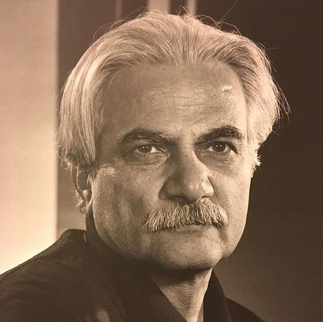

بیوگرافی
ایرج اسکندری تربقان
وی تحصیلات خود را در مقاطع لیسانس نقاشی و فوقلیسانس و دکترای پژوهش هنر از دانشگاه هنر به اتمام رساند. اسکندری ضمن سالها فعالیت علمی ـ هنری همواره حضوری فعال در جایگاههای مختلفی همچون ریاست دانشکدههای هنر؛ مدرس دانشکدههای هنر؛ مدیریت گروههای آموزشی؛ صاحب امتیاز و مدیر مسئول نشریه «آورد»؛ داوری، دبیری و عضویت در شورای سیاستگذاری دهها جشنواره و رویداد هنری داشته است برپایی نمایشگاههای انفرادی، شرکت در نمایشگاههای گروهیِ داخلی و خارجی، حضور در رقابتهای هنری و دریافت عناوین، جوایز و الواح تقدیری متعدد از دیگر فعالیتهای اسکندری است ایرج اسکندری طراح، نقاش و مجسمهسازی است که برخی از آثار هنری او در سطح کشور به چشم میخورند؛ از جمله: نقشه برجسته میدان انقلاب اسلامی(1386 ـ 1361) و نقاشی دیواری میدان فلسطین در شهر تهران ایرج اسکندری عضو پیوسته انجمن هنرمندان نقاش ایران و عضو وابسته فرهنگستان هنر است و برخی آثار وی در موزههای دولتی و شخصی نگهداری میشوند
سرپرستی گروه تجسمی دانشکده الزهرا و عضویت در گروه نقاشی حوزه هنری سازمان تبلیغات اسلامی در کارنامه فعالیت های او دیده می شود ایرج اسکندری از همان کودکی با کارگاه نقشه کشی قالی با این هنر سنتی مانوس شده است او با پرداختی تلویحی به طراحی نقشه قالی، دوره تحصیلات متوسطه را درمشهد گذراند و درسال 1353 پس از اتمام تحصیلات دبیرستانی به دانشکده هنر های تزئینی راه یافت وبرای طی دوره فوق لیسانس به رشته مرمت آثار باستانی روی آورد این نقاش پس ازانقلاب اسلامی، جدا از پرداختن به نقاشی و همکاری با وزارت فرهنگ و ارشاد اسلامی در جهت ایجاد فضای جدید هنری، به تدریس دردوره فوق لیسانس دانشکده هنرهای تزئینی پرداخت و درجریان تعطیلی موقت دانشگاه ها درطول انقلاب فرهنگی به خدمت سربازی رفت و عهده دار تبلیغات عقیدتی و سیاسی نیروی زمینی شد ایرج اسکندری فارغ التحصیل رشته نقاشی از هنرکده هنرهای تزئینی، فارغ التحصیل پژوهش هنر، عضو هیأت علمی و رئیس دانشکده هنرهای تجسمی دانشگاه هنر است ایرج اسکندری در عرصه مجسمه سازی نیز فعالیت می کند ، از مجسمه های او می توان از مجسمه مرمری در لبنان نام برد ، نقاشی دیواری "مادر" در تهران از دیگر آثار او است او در سال 1384 به اخذ درجه دکترای هنر از دانشگاه هنر نائل شده است